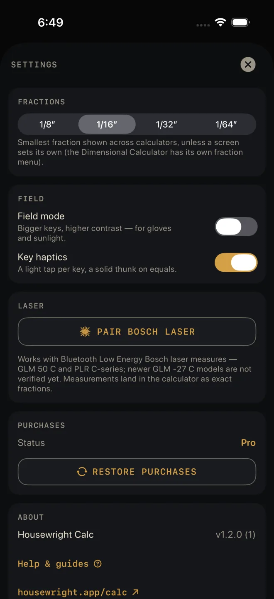

Bosch laser measure
Pair a Bosch Bluetooth laser measure once, and every measurement you take on it lands in the Dimensional Calculator as an exact fraction — no reading it off the laser and typing it in.
Which lasers
The Settings screen says it as it stands: "Works with Bluetooth Low Energy Bosch laser measures — GLM 50 C and PLR C-series; newer GLM -27 C models are not verified yet. Measurements land in the calculator as exact fractions."
Step by step

2- Open the drawer and tap Settings.
- Under LASER, tap PAIR BOSCH LASER. The first time, iOS asks to let Housewright Calc use Bluetooth. Allow it.
- The screen reads "Searching… press the Bluetooth button on your laser." Press it.
- Your laser appears as a button with its name. Tap it. The row now shows the name and CONNECTED.
- Close Settings, go to the Dimensional Calculator, and take a measurement on the laser. It appears on the display, ready for the next key — +, ×, or whatever the sum needs.
You only pair once. After that the app connects to the laser by itself when it starts, and reconnects if the link drops. STOP SEARCHING ends a search; FORGET LASER asks "Forget this laser?" — readings stop until you pair it again — then unpairs.
Where a measurement goes
- Readings go to the Dimensional Calculator, and only there. A reading replaces whatever was half-typed and becomes the current number. A sum in progress is kept.
- If you fire the laser while another calculator is open, the reading is held. A note — "Reading received — open the calculator" — shows at the top for a few seconds. Go back to the Dimensional Calculator and the measurement is there.
- If you fire it with the drawer open, or with Settings, History, a guide or one of the calculator's own sheets over the Dimensional Calculator — say, to test the laser right after pairing — the reading lands in the calculator underneath and a "Reading received" note shows at the top of what is in front.
- Once a laser is paired, a small laser mark sits at the top right of the Dimensional Calculator. Gold means connected; grey means it is still connecting.
- A low battery on the laser does not affect a reading. The measurement it sent is still good; Settings adds Laser battery is low under the paired laser's row so you know to change the cells.
Laser pairing is in Settings for everyone, and readings land in the free Dimensional
Calculator. It does not need Pro.
If it doesn't work
- "Can't search — Bluetooth is off, or this app doesn't have Bluetooth access." Turn Bluetooth on in Control Centre, then check Settings ▸ Housewright Calc on the phone.
- The search finds nothing. Press the Bluetooth button on the laser — it has to be switched on at the laser. Lasers that are not Bluetooth Low Energy models will not show up.
- The status reads BLUETOOTH IS OFF. Turn Bluetooth on in Control Centre.
- The status reads BLUETOOTH ACCESS DENIED. Tap Open Settings under it and turn Bluetooth on for the app.
- The status stays on RECONNECTING… The laser is off, asleep or out of range. Wake it; the app keeps trying.
- The laser fired and nothing landed. Check you are on the Dimensional Calculator and the laser mark is gold.